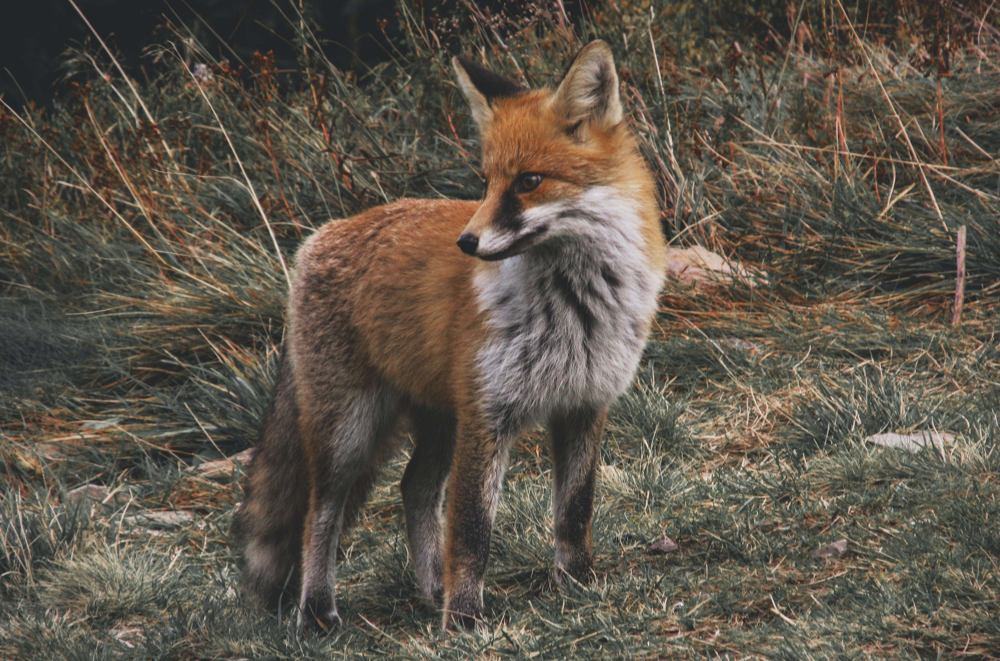
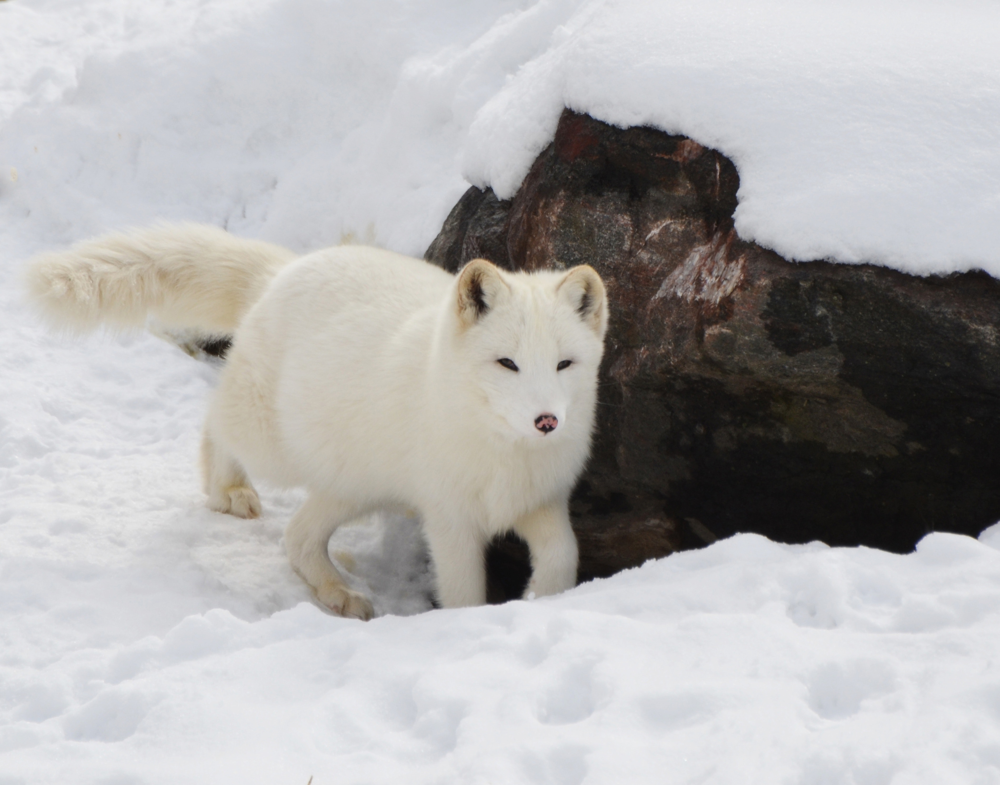
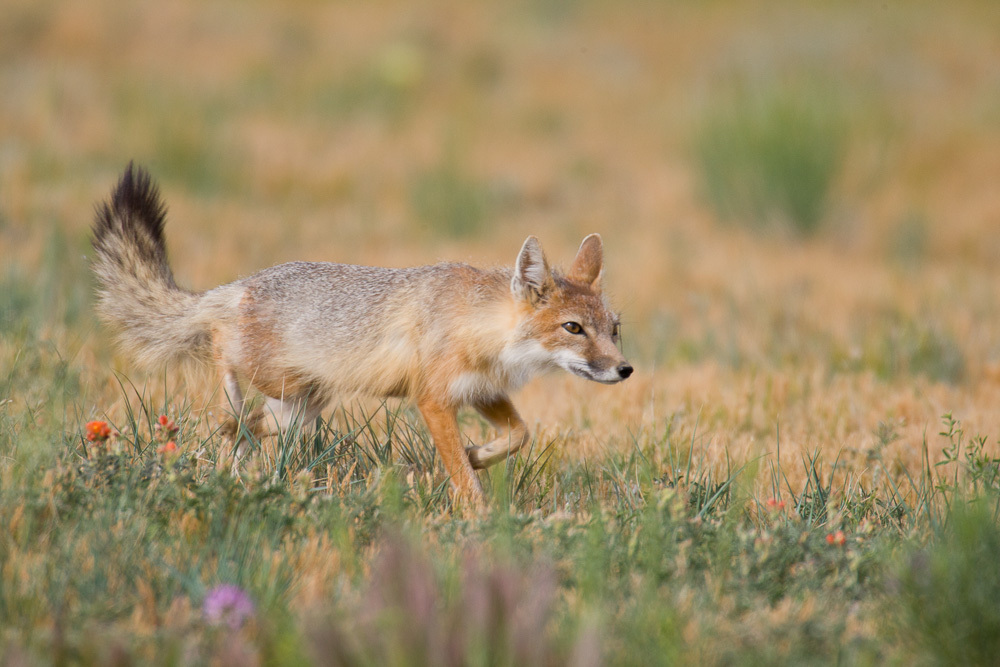
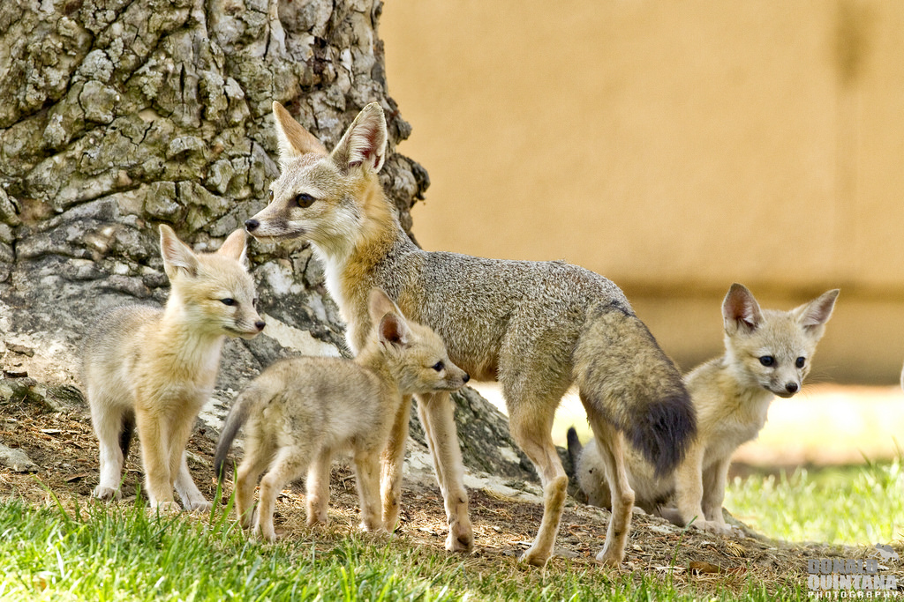
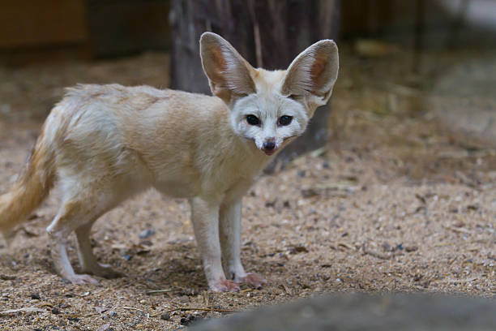
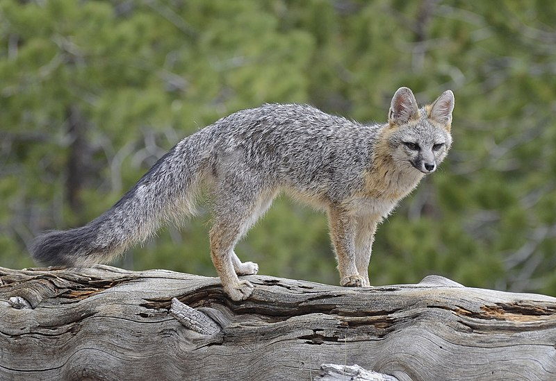
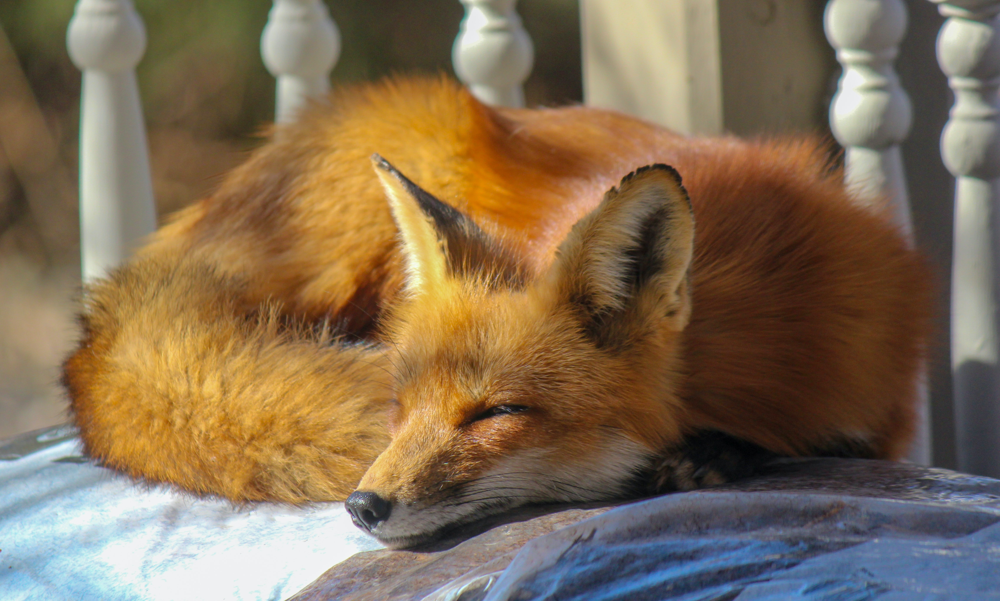
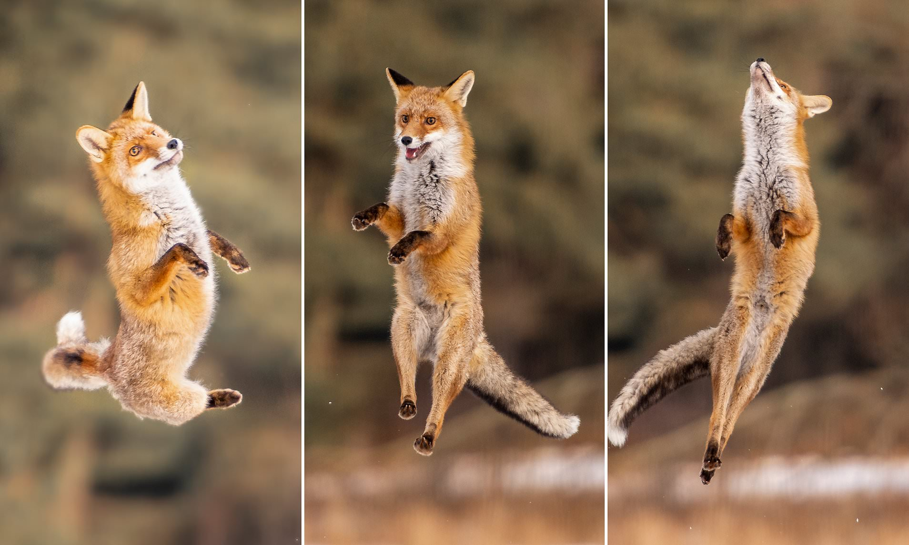
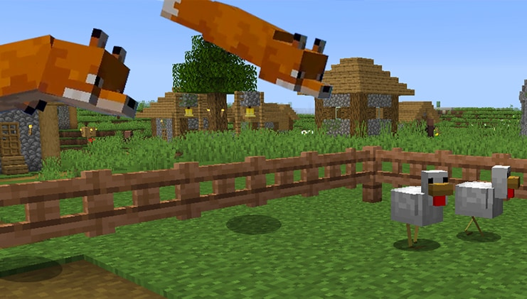
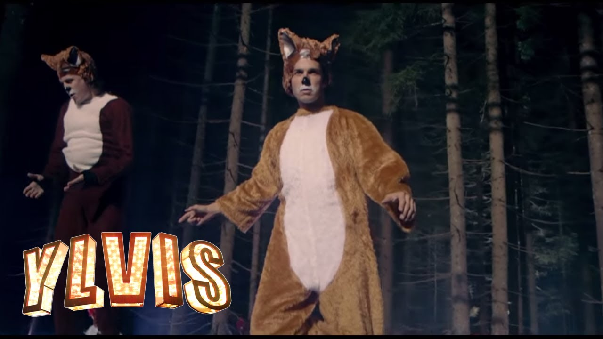

São mamíferos pertencentes à mesma família de cães(canidae), lobos e coiotes.
São conhecidas como raposas verdadeiras aquelas do gênero Vulpes.
Tem uma aparência que lembra a de um cachorro, com focinho pontiagudo e orelhas eretas e pontudas.
São animais onívoros(se alimentam de frutos, sementes, roedores e lebres.)
As raposas vivem em todos os continentes, exceto a Antártida, já que é frio demais para sua existência.
Na natureza, a expectativa de vida típica de uma raposa é de um a três anos, embora os indivíduos possam viver até dez anos.
Algumas raças vivem em pequenos grupos familiares outras vivem solitárias






Raposa-Vermelha
Raposa-do-Artico
Raposa-Veloz
Raposa-Anã
Feneco
Raposa-Cinzenta
Raças
Vulpes Vulpes é a raça mais popular das raposas, seu nome se dá pela sua pelagem laranja-avermelhada.
Elas têm uma distribuição quase global. Podemos encontrá-las em todo o hemisfério norte, em montanhas, planícies, florestas, praias e até desertos ou áreas congeladas.
São animais solitários, que só se unem durante a época de reprodução, que ocorre durante os meses de inverno.
A raposa-do-ártico é conhecida por sua espetacular pelagem invernal, de tom branco imaculado.
Estão distribuída por todo o Pólo Norte, do Canadá até a Sibéria, sendo um dos poucos animais que sobrevivem a temperaturastão baixas.
Também são solitários, a época de reprodução dura praticamente todo o ano, exceto nos meses de julho e agosto.
A raposa veloz pode parecer um pouco com a raposa-vermelha, pois sua pelagem também é laranja, mas de uma tonalidade mais acastanhada com algumas manchas pretas e amarelas.
Se distribui por toda a América do Norte, Estados Unidos e Canadá. É um animal do deserto e das planícies, onde se desenvolve muito bem.
São as fêmeas que defendem um território, e os machos visitam esses territórios apenas durante a época de reprodução.
A raposa-anã tem uma aparência um pouco diferente dos outros tipos de raposas. Possui um corpo muito fino e esbelto, de cor cinza-avermelhada, com a ponta da cauda preta e grandes orelhas.
Está distribuída por áreas de pradaria árida no sudoeste dos Estados Unidos e do México.
Sua época de reprodução é centrada nos meses de outubro e novembro. Nesta espécie, o casal reprodutor pode acasalar por vários anos consecutivos ou mudar a cada temporada.
O feneco, também conhecido como raposa-do-deserto, tem uma cara muito característica, com olhos muito pequenos e orelhas exageradamente grandes.
Está distribuído por todo o Norte da África, habitando o deserto do Saara, e também pode ser encontrado na Síria, Iraque e Arábia Saudita.
Se reproduz durante os meses de março e abril, sendo que o cuidado parental dos filhotes é realizado tanto pela fêmea quanto pelo macho.
Apesar do nome, essas raposas não são cinzentas, mas sua pelagem alterna pelos pretos e brancos, criando uma aparência de cinza.
Estão distribuídas por quase todo o continente americano, do Canadá à Venezuela. Uma das características mais marcantes desta espécie de raposa é que ela é capaz de subir em árvores, graças às suas garras fortes e afiadas.
A época de reprodução ocorre durante os meses mais quentes do ano. Quando duas raposas-cinzentas se acasalam, elas o farão pelo resto de suas vidas.
Curiosidades
As raposas tem uma calda equivalente ao tamanho de 1/3 do seu corpo, devido a esse tamanho elas a utilizam para se aquecer se envolvendo por elas.

As raposas-do-artico chegam a aguentar até -50°C. E se camuflam muito bem na neve devido a sua pelagem totalment branca.
As raposas estão entre os 10 animais mais rápidos do mundo, por exemplo as raposas-velozes podem chegar até 68km/h em um sprint.
As raposas são muito atléticas, por exemplo as raposas vermelhas podem chegar a pular obstáculos de até 2 metros de altura.

As raposas caçam dando saltos para pegar a presa verticalmente com os dentes.
No jogo minecraft não é diferente elas pulam para agarrar suas presas.

Afinal What does the fox say? Você já deve ter ouvido essa música em algum lugar e ficou se pergutando o porque da música. A princípio a música ia ser só um comercial feito por dois irmãos. Mas tomou uma proporção mundial.

Mas afinal oque será que a raposa diz... As raposas são capazes de emitir mais de 40 sons diferentes similares a latidos, já que são da família dos canideos.